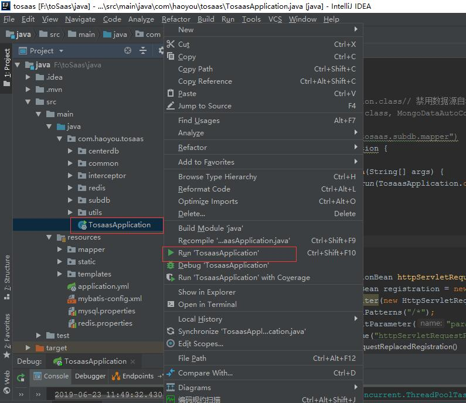

toSaas 使用帮助
1、开发环境
ideal开发工具
maven
springboot+mongodb+mybatis+redis
数据库 mongodb，mysqsl
2、安装mongodb数据库
生产环境一定要开启用户名密码认证，并修改配置文件如下
3、安装好mysql，记住ip地址端口用户名密码，后面用到
4、安装好redis，并修改配置文件
5、启动运行

运行成功后，tomcat使用端口8080 访问
6、使用浏览器登录后台初始化
浏览器打开网址 http://localhost:8080/admin/index.html